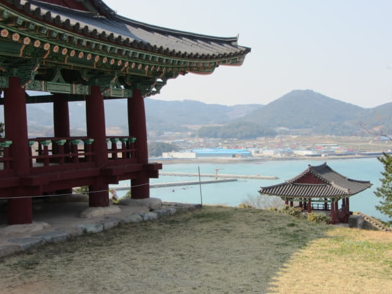
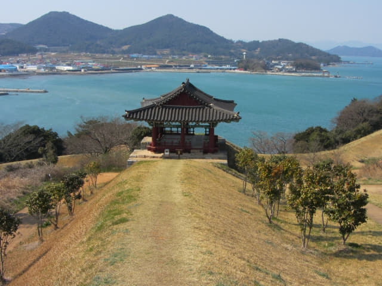
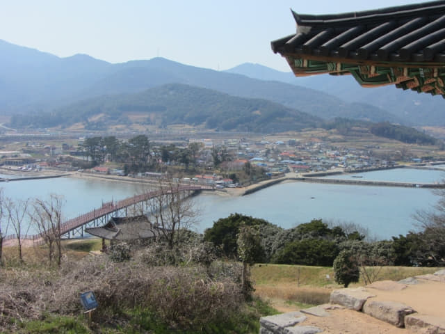

全羅南道．莞島: 清海鎮遺址 (3)
穿過橫躺海灣兩岸的將軍木橋, 進入清海鎮遺址, 接著穿過外城門及內城門, 沿城鎮外圍的版築 (土牆)一直走, 沿途景色非常優美, 不經不覺來到北掘立柱, 這裡是清海鎮遺址最高的地方, 估計是瞭望台的遺跡。望望地圖, 剛好走了一半的路程, 清海鎮遺址的面積比估計的細很多。
 全羅南道．莞島 清海鎮遺址 北掘立柱
全羅南道．莞島 清海鎮遺址 北掘立柱
全羅南道．莞島 清海鎮遺址 北掘立柱
全羅南道．莞島 清海鎮遺址 北掘立柱
回頭望望剛才走來的一段路, 十分清靜。
全羅南道．莞島 清海鎮遺址
清海鎮遺址 祠堂 (사당)
離開清海鎮遺址的北掘立柱, 繼續往前走一會, 路右旁的叢林間有一座古色古香的建築物, 這是一間祠堂, 主要是在一些重要慶典時所用。
全羅南道．莞島 清海鎮遺址 祠堂
全羅南道．莞島 清海鎮遺址 祠堂
全羅南道．莞島 清海鎮遺址 祠堂
離開祠堂, 沿清海鎮城東面版築(土牆)的頂部走。
全羅南道．莞島 清海鎮遺址 東面版築(土牆)
這裡可看到遠處海中連接古今島和薪智島正在興建中的張保皋大橋 (장보고대교)。當這大橋通車後, 從莞島往長興便不用拐一個大彎, 快捷方便很多。
全羅南道．張保皋大橋 (장보고대교)
全羅南道．張保皋大橋 (장보고대교)
清海鎮遺址 南掘立柱(남굴립주)
經過清海鎮遺址另一間房子的遺跡 – 南掘立柱。
全羅南道．莞島 清海鎮遺址 南掘立柱
繼續沿清海鎮遺址內城中的步道向前走。
全羅南道．莞島 清海鎮遺址
清海鎮遺址 東南雉 (동남치)
來到清海鎮城東南的地方 — 東南雉, 這裡可清楚監視東南面海上的動向。
全羅南道．莞島 清海鎮遺址 東南雉
全羅南道．莞島 清海鎮遺址 東南雉
清海鎮遺址 南面版築(土牆) 及 高臺 (고대)
在東南雉拐右, 沿清海鎮城南面版築的頂部走。遠處的一座城樓便是高臺。
全羅南道．莞島 清海鎮遺址 南面版築(土牆)
全羅南道．莞島 清海鎮遺址 南面版築(土牆)
全羅南道．莞島 清海鎮遺址 南面版築(土牆)、高臺
全羅南道．莞島 清海鎮遺址 高臺
全羅南道．莞島 清海鎮遺址 高臺
回頭望望剛才從東南雉走來高臺的一段版築。
全羅南道．莞島 清海鎮遺址 南面版築(土牆)
清海鎮遺址的高臺位於長島 (將軍島)南面的中央, 可清楚監視對岸莞島、東面、南面和西面的情況, 佔極有利的位置, 是清海鎮遺址最大的建築物, 估計是張保皋的指揮中心。
全羅南道．莞島 清海鎮遺址 高臺
全羅南道．莞島 清海鎮遺址 高臺
全羅南道．莞島 清海鎮遺址 高臺
清海鎮遺址．內城門
清海鎮遺址內城門就在高臺下面, 差不多把長島繞了一圈。
全羅南道．莞島 清海鎮遺址 內城門
全羅南道．莞島 清海鎮遺址 內城門
全羅南道．莞島 清海鎮遺址 內城門
離開高臺, 沿坡道往下走一會便返回清海鎮遺址內城門。
全羅南道．莞島 清海鎮遺址 內城門
全羅南道．莞島 清海鎮遺址 內城門
從清海鎮遺址內城門抬頭回望高臺。
全羅南道．莞島 清海鎮遺址 高臺
全羅南道．莞島 清海鎮遺址 高臺
站在清海鎮遺址內城門上眺望外城門、將軍木橋和對岸村落景色, 真是很美。
全羅南道．莞島 清海鎮遺址 內城門
全羅南道．莞島 清海鎮遺址 將軍木橋
全羅南道．莞島 清海鎮遺址 將軍木橋
離開內城門, 便離開清海鎮的內城了。
全羅南道．莞島 清海鎮遺址
全羅南道．莞島 清海鎮遺址
穿過清海鎮內城門, 回頭望望。
全羅南道．莞島 清海鎮遺址 內城門
清海鎮遺址．外城門
離開內城門, 往下走便返回清海鎮入口的外城門。
全羅南道．莞島 清海鎮遺址 外城門
穿過外城門, 就這樣剛好把整個清海鎮遺址以順時針的方向環繞一周。離開前再回頭望望。
全羅南道．莞島 清海鎮遺址 外城門
經過外城門前的水井, 踏上將軍木橋, 便正式離開了莞島清海鎮遺址。
全羅南道．莞島 清海鎮遺址 外城門
全羅南道．莞島 清海鎮遺址 將軍木橋